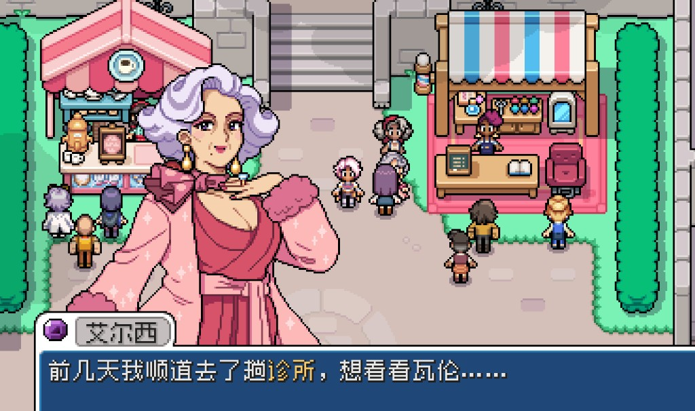
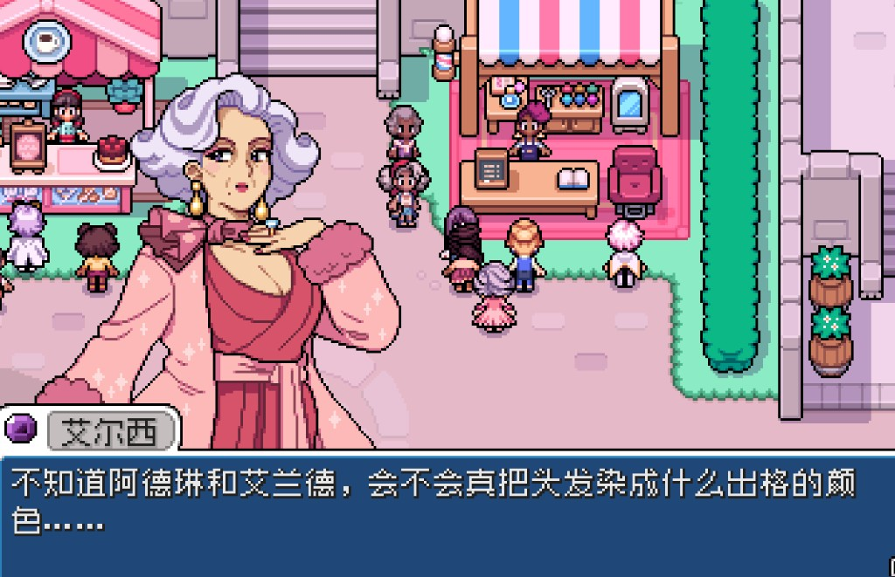
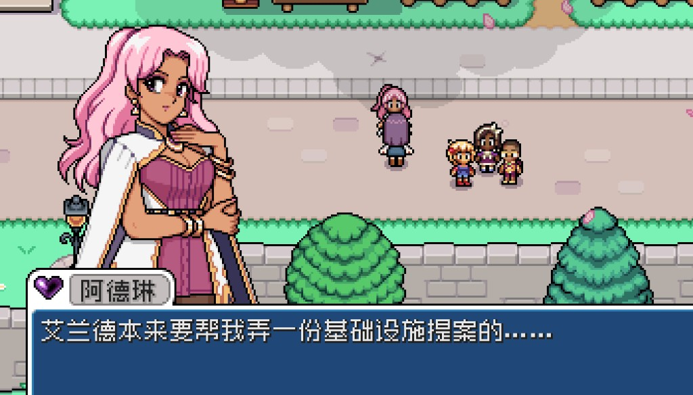

Quick answers
- Conversation before presents.
- Birthday mail is your reminder—not panic shopping.
- Do not gift equipped tools by accident.
- Loved gifts later; liked forage is enough early.
- Romance deadlines are optional in season one.
Talk-first habit
Pass NPCs on shop days. Elsie gossip systems unlock later—until then, be friendly without emptying the wallet.
Gift FOMO
We almost spent seed money on “perfect” presents. Crops won. Keep a few pretty forage pieces for birthdays you notice.
Safe to skip
- Max hearts before Summer
- Gifting trash or weeds
Screenshots from our save
Real Fields of Mistria shots from our first-season play. Captions in English; in-game UI language may differ.




FAQ
Wrong gift?
Friendship recovers. Do not restart.
Romance now?
Only if you want the story—farm first is valid.
Unofficial fan guide. Not affiliated with NPC Studio. Verify details in your game version.